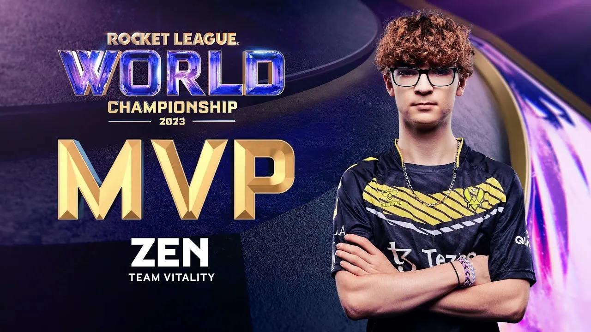
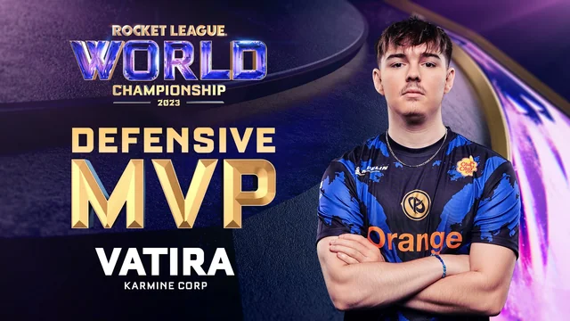
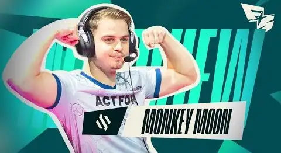

Estrellas del RLCS
La Rocket League Championship Series (RLCS) 2022-23 destacó por su intensidad y jugadores que revolucionaron Rocket League: maestros de la mecánica, estrategas visionarios y mentes frías bajo presión. Este artículo nombra a los talentos que dominaron estadísticas, lideraron equipos a la victoria y dejaron jugadas para la historia, definiendo una temporada imborrable.
Estos son los mejores jugadores que dominaron la temporada 2022-23:
- Zen (Team Vitality) - MVP del Mundial 
- Vatira (Karmine Corp) - Mejor jugador defensivo 
- M0nkey M00n (Team Vitality) - Revelación del año 